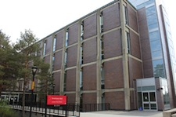

The friendly staff at the Dean's office are able to direct you to your own Program Advisor, who can help you figure out what courses you should take over time and other such things.
You also find out more about First Year Seminars, small classes designed to give students the opportunity to discuss and research topics of interest in a core subject area. Most seminars don't occur until third or fourth year, so it's pretty cool that first year arts and social sciences students have access.
Speaking of First Year Seminars, it looks like it's time for your first one! Better head to 403 Southam Hall now!
